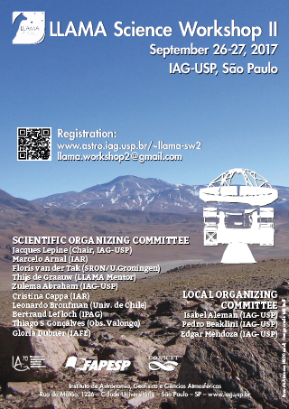

26-27 September 2017
IAG-USP
ABOUT THE MEETING
The
meeting aims to bring together the various groups that invested or
helped the LLAMA project up to now to discuss projects for early
science and plans for future surveys that could be performed with the
LLAMA antenna. The discussions will focus on finding
niches of observations that only LLAMA can perform, possible
joint programs, and suggestions for the organization of a time
allocation committee.
NEWS
POSTER

|
Webpage by I. Aleman. Credits for the image in the header: NASA, ESA, and the Hubble Heritage Team (STScI/AURA) - ESA/Hubble Collaboration
|